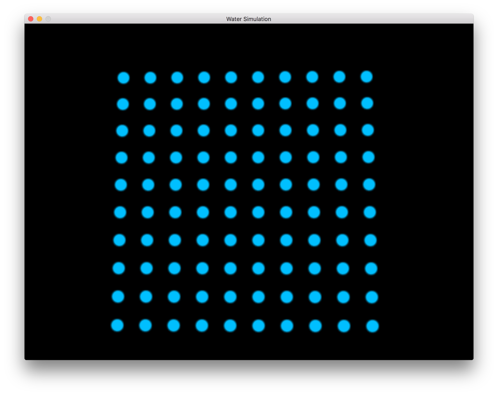
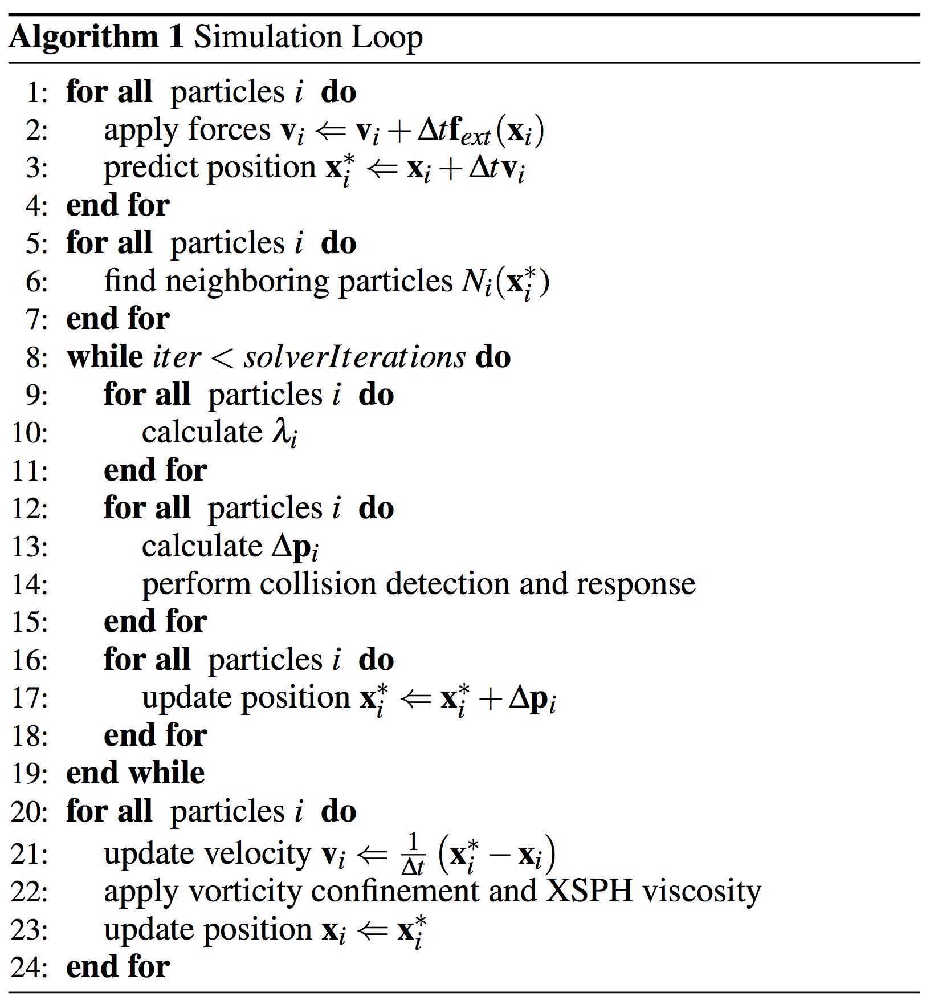

|
In this project we put the skills we have learned in CS184 to use. We first develop a simple particle renderer with controls. We then attempt to use a particle-based approach to simulate water. The key to simulating any fluid is enforcing incompressibility. Unfortunately, this is computationally expensive. In the paper Position Based Fluids, Muller and Macklin describe a method for simulating fluids in a relatively efficient manner while not requiring impractical timesteps. We attempt to implement the various ideas in this paper such as enforcing incompressibility by incorporating density constraints into Position Based Dynamics, simulating surface tension by adding artificial pressure, and reducing damping by adding vorticity confinement and viscosity.
Before we could simulate anything, we needed something to view our results on. We followed the excellent tutorials on opengl-tutorial.org and learned how to use openGL to create a window and render objects. We then tailored this to our need in order to render our particles that would eventually simulate water.
|

|
We now wanted a way to navigate our space. Thankfully, the GLFW Library provides plenty of functions to get user input. We decided to go with FPS like controls and so the arrow keys allow the camera to strafe in the respective direction and moving the mouse affects the direction in which the camera is pointed. We now have a convenient way of viewing our particles from any point of view that we like.
Now that we have a basic particle renderer and a way to navigate, let's add some action to our particles!
As previously mentioned, we follow the technique described by Macklin and Muller in the Position Based Fluids Paper (linked above). From a high level, the algorithm is as follows:
|

|
The first part of nearly any physically based simulation is of course to apply external forces. For this part the only external forces acting on our particles is gravity. We then do the classic update of the velocity as v = v + a * deltaT and update position as x = x + v * deltaT. We used a constant deltaT of 1/60. This caused the real time rendering, of course, to be out of sync and look unrealistic. In order to achieve the realistic time we simply output an image each time step and then create a video from these images with 60 FPS.
Here is our simulation so far with just external forces applied:
Below we visualize one particles neighbors. The particle we are looking at is in red, and its neighbors are white.
|
|
The main bulk of simulating fluids, and thus the main bulk of the paper, is maintaining constant density, or enforcing incompressibility. In other words, for each time step, we want to move the particles such that the density around each particle is as close to the rest density as possible.
Obviously, the first thing we need is a way to estimate the density. Now that we have each particles' neighbors, this can be done using the SPH Density estimator. We define the density for the ith particle as:
Where $W(r,h)$ is a smoothing kernel. To be consistent with the paper we used the Poly6 Kernel for the non-gradient calculations and the Spiky Kernel for the gradient calculations. One small note is that we give all particles an equal mass so we drop the $m_j$ term in the above calculation.
We can now express our desire for a constant density as a mathematical constraint. Thus, we define a constraint function for each particle, where the constraint for the ith particle is:
Where $\rho_0$ is the rest density and $p_1, ..., p_n$ denotes the position of the ith particle and all of its neighbors.
As was previously mentioned, Particle Based Fluids works by incorporating the density constraint into the Particle Based Dynamics method. PBD works by looking for a correction to the positions such that the constraint function is zero. In other words, PBD seeks a $\Delta p$ such that:
Now recall that $\Delta p = \nabla C(p) \lambda$. We have now solved for everything we need to in order to calculate $\Delta p$, which is the change in postition such that the constraint function equals zero. In our case, this means we now can calulate the change in each particle's position such that its density is about the same as our rest density! For each particle i, the total number of corrections is:
At this point, using the above position update rule we ge the following:
In the above video, we get good results, but the movement is very dampened. This is a side effect of using Position Based Dynamics. One way to fix this is to increase the number of iterations but this quickly becomes unreasonable. A better solution is the one used in the Position Based Fluids paper which is to add vorticity confinement and viscosity to our simulation.
Vorticity is the measurement of spin and rotation in a fluid. It can be observed by watching particles' relative displacements when they move along the flow. We added the vorticity by applying a corrective force. We estimated the vorticity of a particle followed by the equation from the paper:
We also apply viscosity to our water to reflect the "thickness" of the fluid. Similar to the shearing force from the cloth simulation, fluid also have shearing force. Viscosity is the force which fluid resists that distortion. Thick fluid has high viscosity, thin fluid like water has low viscosity. So water particles appear to not stick compared to oil particles. We can do so by updating the particle's velocity as:
Adding the vorticity confinement and viscocity to our simulation gives us the following:
As we can see, the fluid is much more...fluid. Less damping occurs, we get nicer splashes, and the fluid rebounds and "sloshes" in a manner more similar to real water.
We originally had all the particles appear as blue. We think it is better to have the particles with higher velocity to appear in whiter colors so the fluid looks more like foam. In order to change the particles' colors according to their velocities. We followed the equation from the original report:
This was the last touch and we now get our final result: